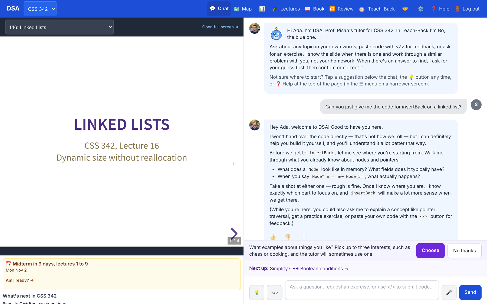
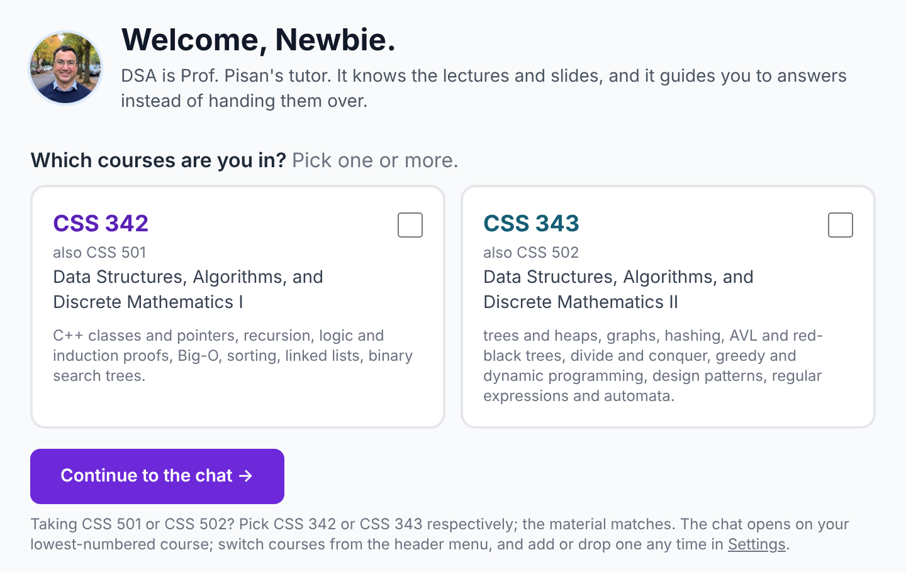
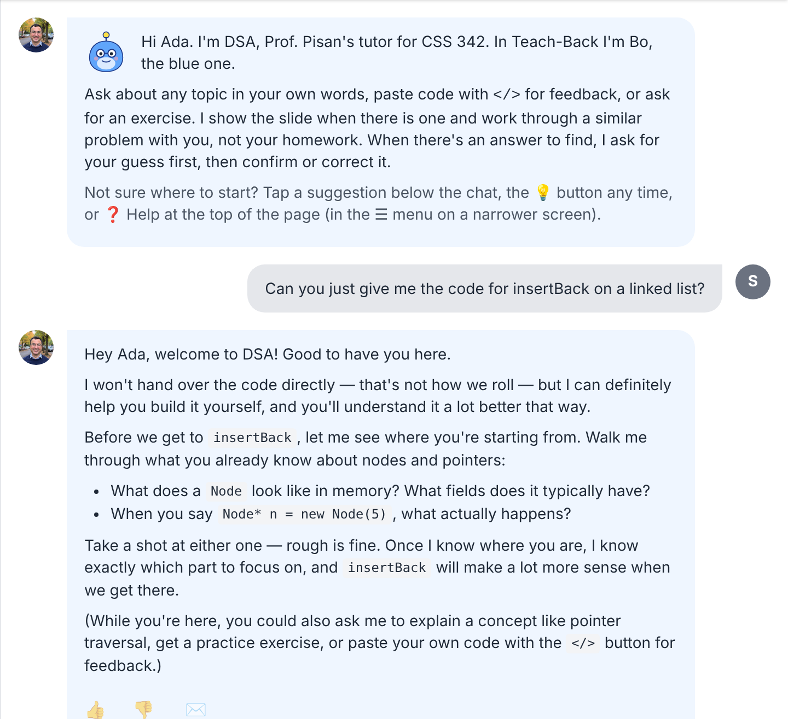
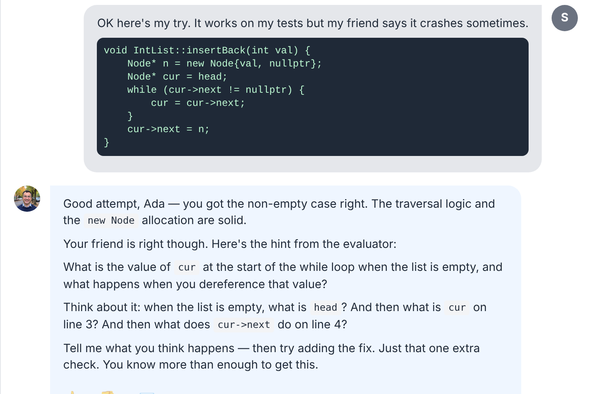
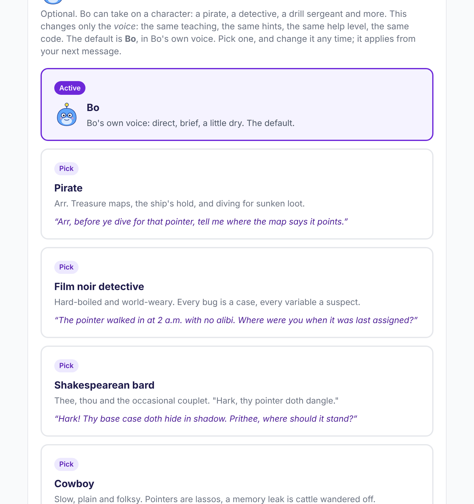

Week 1 orientation
Meet DSA,
your course tutor
What it does, what it will not do,
and how to get the most out of it
DSA (Digital Student Assistant), formerly YPDSA
What it is
A tutor that knows your course, and asks before it tells

- It has read your course's lectures, slides and textbook, and anything your instructor adds.
- It is open any time, on a laptop or a phone.
- It is here to help you learn the material, not to do the course for you.
Think of it as office hours that never close, with a tutor who keeps asking "what do you think?"
Getting in
Sign in with the address on your class roster

- Go to digital-student-assistant.com.
- Type your school email. You get a 6-digit code and a link. No password.
- Pick your course on the Welcome page, then Continue to the chat.
Told your address is not authorized? Your instructor adds you to the class roster. Ask them.
You can add or drop a course any time in Settings.
The main screen
Ask in your own words. The slide opens beside you.

- Slides beside the chat. When the answer is on a slide, it opens next to you. On a phone, tap Slides.
</>for code. Paste code, or photograph handwritten code. It tells you what is wrong and where to look. First it asks what score you expect.- 💡 for ideas when you do not know what to ask.
- 👍 / 👎 under every reply. A 👎 with a word of why reaches the people who run it.
The deal
What it will do, and what it will not
It will
- Work through a similar problem with you, and point you to the slide
- Ask for your guess first, then confirm or correct it
- Read your code and tell you what is wrong and where to look
- Quiz you, trace an algorithm step by step, or explain why an answer is wrong
- Give one more step when you have tried and are still stuck
It will not
- Write your assignment's solution. Push for it and it holds where it is, and says why
- Paste long code. Long code blocks are cut automatically, every time
- Confirm a final answer on a graded assignment your instructor uploaded
- Do work for another class, or wander off topic
It can be wrong. Check anything important against the lecture or the book, and 👎 a reply that is off.
Why it holds back
You learn from the step you take, not the one you read
An AI that hands out answers makes homework easier and exams harder.
In a large field study, students with an unrestricted chatbot did better on practice problems and worse on the exam than students with no AI. A version that gave hints instead of answers removed most of that harm.
Bastani et al. (2025), PNAS 122(26)
So DSA gives you the next step, and waits for you to take it.

How much help you get
Help grows with what you have shown it
New topic? More help.
On a topic you have not shown yet, it works a full example on a different problem. On one you know, it gives a pointer or a question, so you take the step.
Show your attempt
A question about your own code always gets at least the approach in words. Your work is what buys a sharper next step.
Still stuck? Show me more
The button under a reply raises help one step, up to explaining the answer and why it works. Twice per topic every six hours. If you stay stuck, it steps up on its own.
Only graded work moves your level
Mastery checks, quick checks, reviews, exercises and Find my bug. Chatting does not change it. Levels fade if you leave a topic for a while.
It never hands over the full solution. The most it gives is pseudocode with the key lines left blank.
Asking well
The more of your thinking you share, the better the next step fits
| Weaker | Stronger |
|---|---|
| "my remove doesn't work, can you fix it" | "Here is my remove. remove(3) returns false and the list still prints 3 8. I expected true and 8. I think the loop never looks at the first node. Am I on the right track?" |
| "explain recursion" | "Here is my trace of f(3). I think it returns 6, but it prints 3. Where does my trace go wrong?" |
| "what's the answer to question 4?" | "I got X because Y. Can you check my reasoning, and let me try each step?" |
| "what's the complexity?" | "I think this is O(n log n), because the inner loop halves each time." |
- Paste the exact error or failing test. Say what you expected. One question at a time.
- After a hint, say in your own words what you will try next.
Beyond the chat
Practice that counts toward your map
🗺 Map
Every topic and its prerequisites: not started, started, practiced, solid.
🔁 Review
One question at a time on topics you answered before, timed so they stick.
Mastery check
Three questions on one topic. Two of three makes it solid.
Quick check
One or two short questions after a missed exercise or a lecture you watched.
🐞 Find my bug
A short program with exactly one bug. Say which line, why, and the fix.
🙋 Teach-Back
You explain a topic; Kit keeps asking why and what if. Never graded.

📝 Am I ready? lists your exam's topics, weakest first.
When you need a person
The tutor is not the only help
✉️ Ask my instructor
Sends the conversation to your class's instructors, by email. You see exactly what goes before you send, and any reply comes to your inbox.
One email per conversation, three a day.
Study with a classmate
Find a partner in your class and ask the tutor together. Where your class has them, you can also ask for a Quantitative Skills Center tutor.
Joint sessions are practice and do not count toward your progress.
Lecture and office hours
DSA adds to lecture, office hours and the textbook. It does not replace them. Bring what you tried in DSA to office hours.
Limits you might meet
When it stops, the slides and the book stay open
- A daily limit on chat questions. It tells you when more open.
- A tutor budget for the day, week and month. A line under the chat box warns you when it runs low and says when it comes back.
- A mastery check waiting on a topic holds that topic until you answer it or say "not now".
- Keep it respectful. A rude message gets a warning; a second limits the tutor to restating the problem until the end of the next day.
Exam season
Your instructor can set exam dates. In the week before, a code-free question on topics you have already mastered can get a worked example, and the tutor may confirm your answer.
Asking for mastery-check answers is noticed, and never raises the help level.
Your data
Write as you would in office hours
- Kept: your conversations, code, scores and progress, and which pages and slides you open. Usage records carry numbers, never your email or what you wrote.
- Seen by: your class's instructors, who can read your conversations for that class and see your topic levels, and the site's administrator.
- Not a grade. Practice is never graded. Only a graded Teach-Back round your instructor assigns goes to them as a result.
- How long: identifiable records are kept for up to one year, then anonymized.
- Yours to take or remove: Settings has Download my data and Delete my account.
- Never sold or shared outside the course. The AI provider is not asked to train on it.
The full wording is on the sign-in page and at /privacy.
Make it yours
Change the voice, never the teaching
- Bo's character: a pirate, a film noir detective, a Shakespearean bard and more. Same hints, same help level, same code.
- Interests: pick up to three, and the tutor sometimes uses one for an example (a chess board for a 2D array).
- Reply language: seven languages for the tutor's replies. The site and lectures stay in English.
- 🔊 Hear it: where the voice is on, a reply can be read aloud in Prof. Pisan's voice.
- Light or dark, in Settings.

Six habits
Getting the most out of it
- Show your work first: your attempt, the exact error, what you expected.
- Guess before you ask. A guess you can check teaches more than an answer you read.
- Stuck after trying? Say where, or press Show me more.
- Say "let me try each step" when you want to work it out yourself.
- Graded practice moves your map. Do the checks and come back to Review when items are due.
- It can be wrong. Check against the slides, and 👎 what is off.
digital-student-assistant.com · the ❓ Help page has all of this, any time